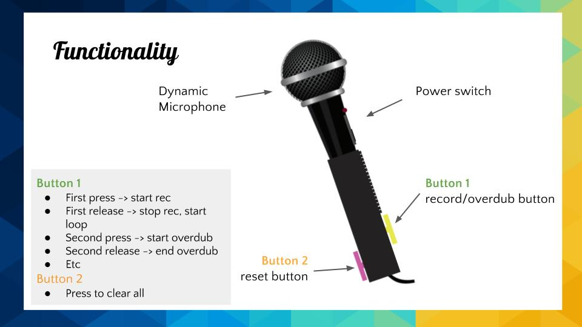
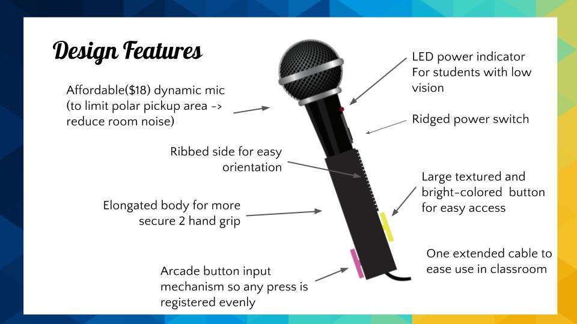

A system enables microphones to become looping devices that will enhance student beatboxing abilities. This project was made in collaboration with Ishaan Chaudary, Satbir Multani, Ada Zhao and Kelly Chang during the Design for the Real World class at ITP in 2016. This project was designed and tested with kids with visual impairment from the Lavelle School for the blind in the Bronx NY, to help them practice with Beatboxing and Speech Teraphy at the same time.
 